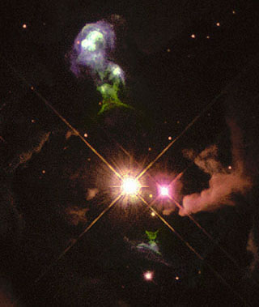

Credit: NASA and The Hubble Heritage Team (AURA/STScI)
Observations of protostars show that while material is falling onto the central object and accretion disk as expected, other material is being expelled from the system in both directions and perpendicular to the plane of the disk in what is known as a bipolar outflow. If the material in this bipolar outflow is travelling at very high velocities, typically hundreds of kilometres per second, it is commonly called a jet.
Herbig-Haro objects are bright knots of emission located wherever this high-velocity material interacts with its surroundings to produce hot, ionised gas. In addition, if the ejection velocities in the bipolar outflow change over time, faster moving material can overtake slower material ejected at an earlier time resulting in Herbig-Haro objects located along the direction of the outflow. Generally however, the brightest Herbig-Haro objects are found at the ends of the jet, where the material ploughs directly into the surrounding molecular cloud. Created in a dynamic fashion, they have been shown to evolve over timescales of only a few years, with existing knots becoming brighter or fainter or disappearing completely, and new knots forming where previously nothing was detected.
Typical Herbig-Haro objects have temperatures of around 10,000 Kelvin, densities from a few thousand to a few hundred thousand particles/cm3 and can contain up to 20 Earth masses of material. Once very rare, over 600 have been found to date, all in regions of star formation and usually associated with Bok globules.